Selected projectsMedicool
Branding and designing the app for Medicool, a smart medication case
The challenge
Catalyst’s Co-Founders is an early-stage entrepreneurship programme in Northern Ireland that brings people from different backgrounds together to build start-ups. In 2023 it focused on the UN’s Sustainable Development Goals, including good health and wellbeing.
Our team of four formed at the programme’s Hot House event: me on branding and the app, a CAD engineer, and the two researchers whose idea it was. People who rely on medication still need it when they’re away from home, but keeping it stored properly and remembering every dose gets harder on the move.
- The idea
- A physical case that stores medication on the go, and an app that talks to it to regulate the temperature, remind you about doses and more.
Who it’s for
We ran a target audience exercise as a team to agree who Medicool was for and what they needed from it.
- What they value: a reliable, trustworthy product they can understand and use easily.
- What gets in the way: keeping track of their medication, on top of storing it properly.
- What would win them over: simplicity and effectiveness. Engaging, but never overwhelming.
- Need or want: both. It takes away the worry of whether a dose was taken and whether the medication was stored well.
- Who else it could help: small businesses, hotels and Airbnbs, offering cooled storage to guests, with app reminders for people travelling abroad.
What was already out there
We looked at what people already used to manage their medication, from pharmacy services that pre-pack each dose to automatic dispensers with alarms and lockable lids. Since then, I’ve also looked at cooling wallets and temperature sensors, the products closest to Medicool’s idea, and at what customers say about all of them in public reviews.
-
Pre-packed pouches
PillTime
LikedEach dose sorted into a dated pouch, which makes travelling with medication easier.
DislikedMissing items, wrong dates and slow customer service. A pouch can’t remind you or keep anything cool.
-
Automatic dispensers
Pivotell, Medelert
LikedLoud, persistent alarms and locked compartments, trusted by carers of people with memory problems.
DislikedFiddly to set up and refill, alarms that can be hard to hear, and built to sit on a table at home.
-
Reminder pill boxes
TabTime
LikedSmall enough to carry, with simple alarms and vibration.
DislikedReminders only: some buyers didn’t trust them, and they can’t tell whether a dose was taken.
-
Cooling wallets
FRIO
LikedKeeps medication cooler for days with no power or ice, so it’s popular for travel.
DislikedNot as cold as a fridge, weaker in heat and humidity, a tight fit, and no way to check the temperature.
-
Temperature sensors
MedAngel
LikedAlerts when medication gets too hot or too cold.
DislikedDropped connections and gaps in the data, and it’s one more thing to carry alongside the medication.
Where Medicool fits
- Storage and reminders in one. Each product did one job. Medicool set out to keep medication cool and remind you to take it, in one case.
- Made to carry. Dispensers stay at home. Medicool was designed for medication on the move.
- Knowing, not guessing. Wallets can’t show the temperature, and timers don’t know what’s in the box. Medicool’s app shows the case’s temperature, and the case confirms when a dose is in its delivery pod.
- Simple to live with. Fiddly setup came up again and again, and our audience asked for simplicity, so the app leads with the case’s status and the next dose.
- Takeaway
- Most of what we found was designed for use at home. Medicool’s angle was medication on the move.
The brand
I designed the Medicool identity: a mark of three rounded strokes beside a bold wordmark, in a deep green with a bright mint accent. It had to feel calm and trustworthy, the qualities our audience said they valued most.
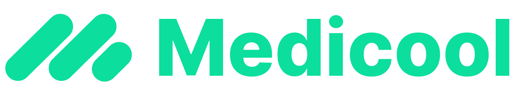
The case
Alongside the app, the team worked through what the physical product needed to be. It had to be compact, easy to carry, and usable by people with reduced dexterity, without giving up security. Every bit of automation added cost, bulk and weight, so we weighed three versions.
- Manual. Loaded by hand, with the medication schedule set in the app. You dispense each dose when the app prompts you, with an optional lock.
- Semi-automatic. Still loaded by hand, but each dose is dispensed and recorded automatically, with an automatic lock.
- Fully automatic. Loading and dispensing both handled by the case. Not feasible at the time.
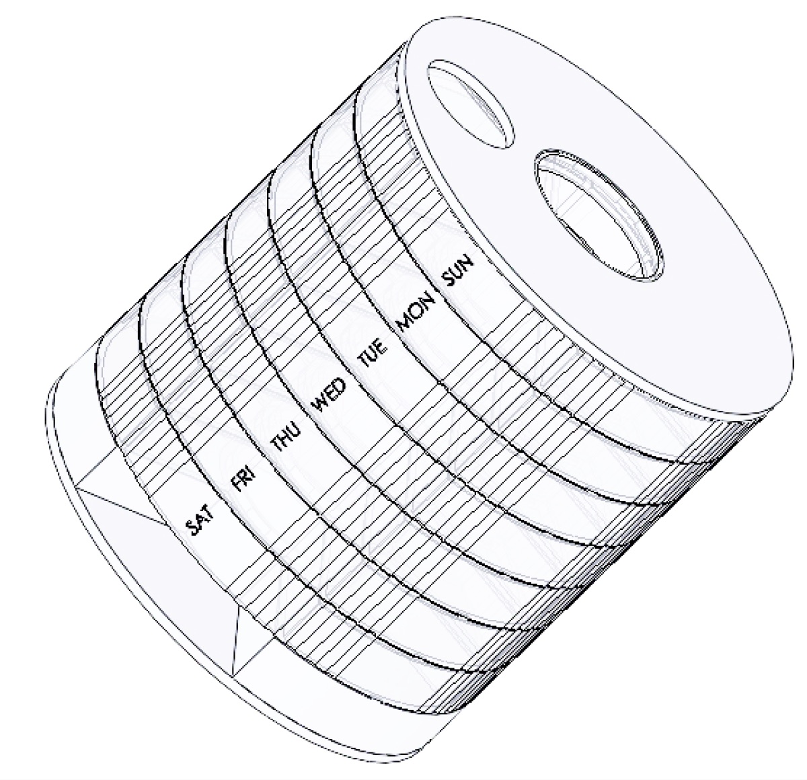
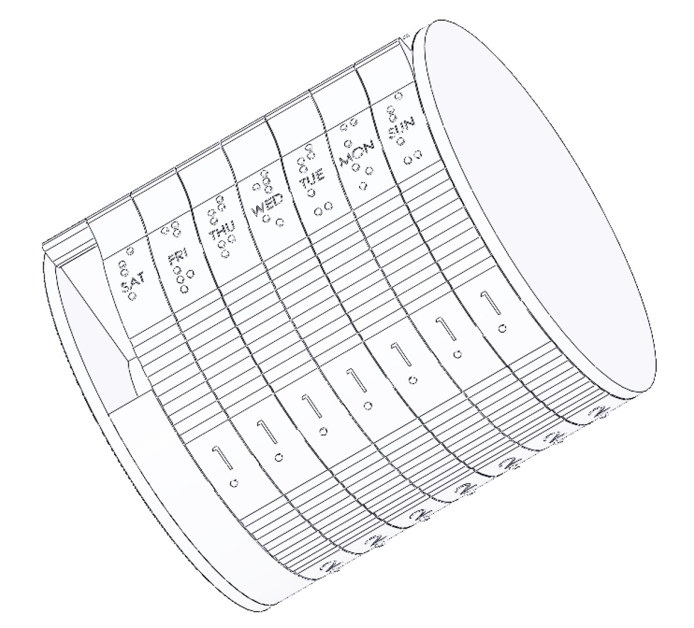
What the case needed to sense
- Its position: tilt switches to tell upright from upside down, and an accelerometer to know when it’s in transit.
- The dose: a load cell to confirm a pill is in the delivery pod.
- Its status at a glance: a red or green light, orange while busy, flashing white when a dose is ready, and blue when it’s connected to the app.
The app
I designed a lo-fi prototype of the app, the case’s control panel, to show how what we learned about our audience shaped the product.
The screens below are rebuilt from that 2023 prototype, keeping its flows and content, now designed in high fidelity with the Medicool brand.
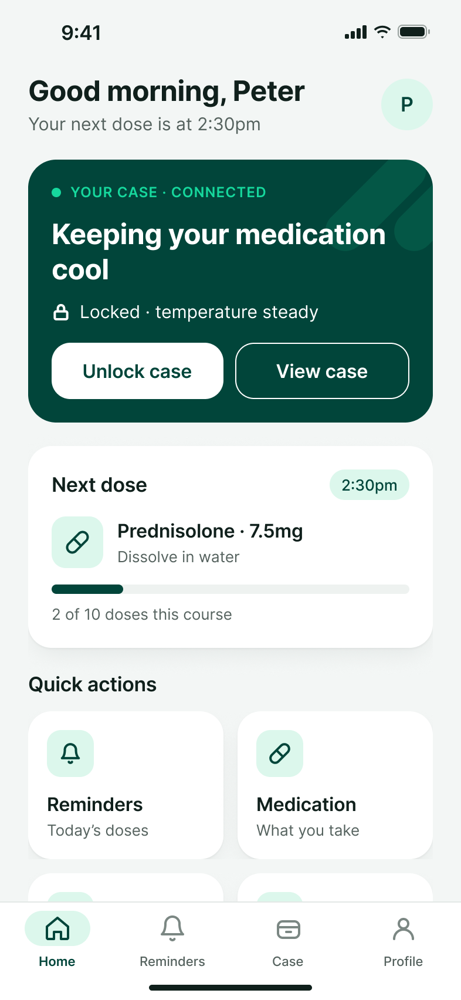
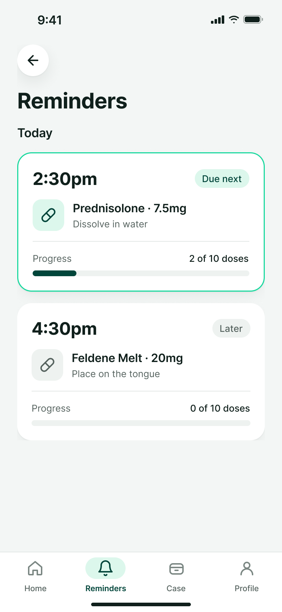
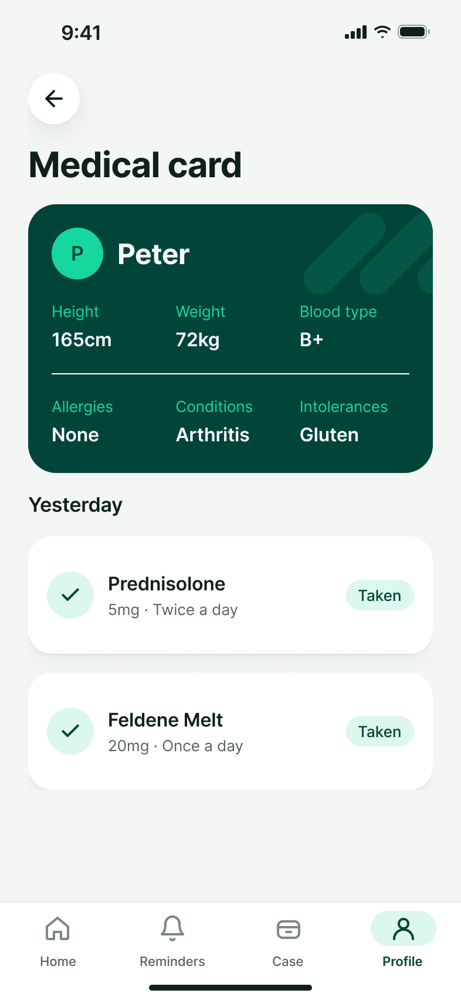
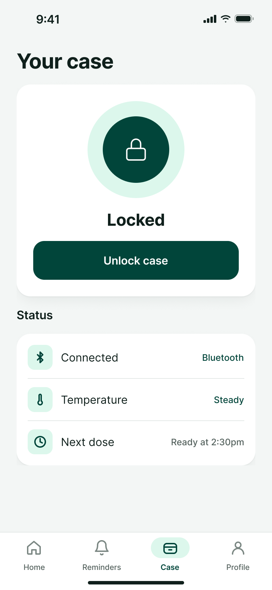
- Simple by default. The audience wanted something effective but not overwhelming, so the home screen leads with the case’s status and the next dose.
- Keeping track. Reminders show exactly what to take, when, and how far through a course you are.
- Trust. The medical card keeps allergies, conditions and intolerances together, ready when they’re needed.
- When things go wrong. If the case can’t be reached, the app says so plainly and reminders keep working.
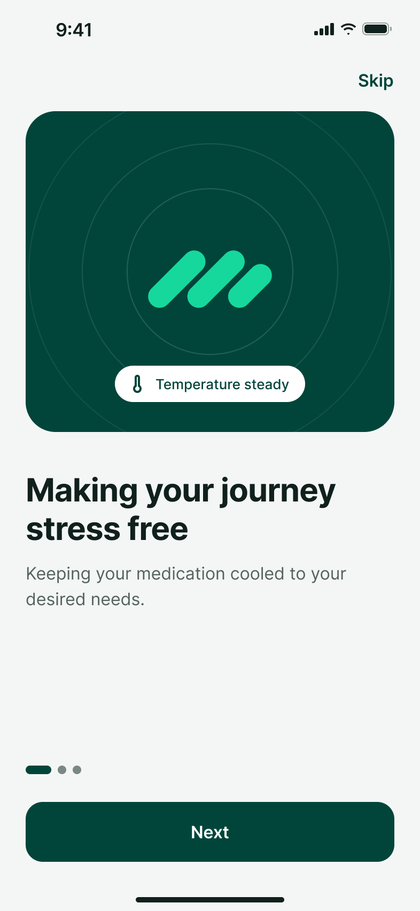
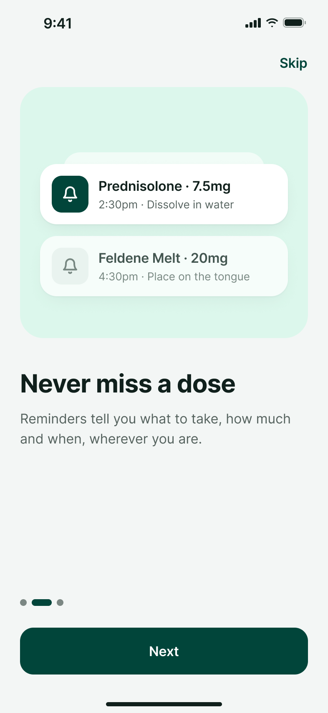
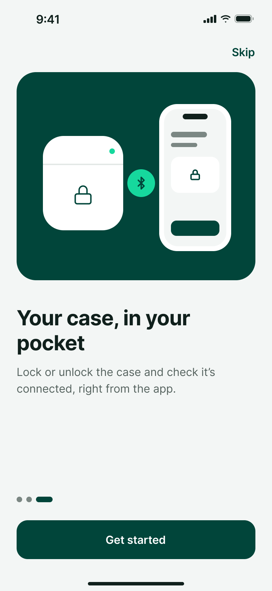
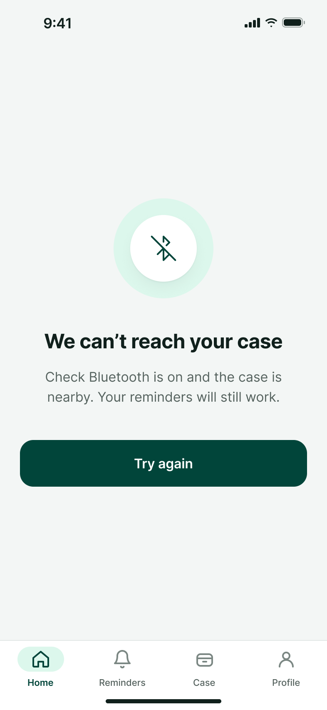
Outcome
We pitched Medicool at the programme’s Pitch Night, and it was one of ten teams, out of 18 that graduated, selected for a £10,000 proof-of-concept grant. We later had to withdraw, as some of the team were unable to continue.
Reflection and what I learned
This project was more about stepping outside my comfort zone than anything design related. It was more of a side hobby, seeing how far I could push it.
I wanted to gain experience by speaking out more, talking and socialising. From forming a team at the Hot House event to pitching at Pitch Night, Medicool meant speaking in front of multiple people and telling a story, and ultimately it boosted my confidence.